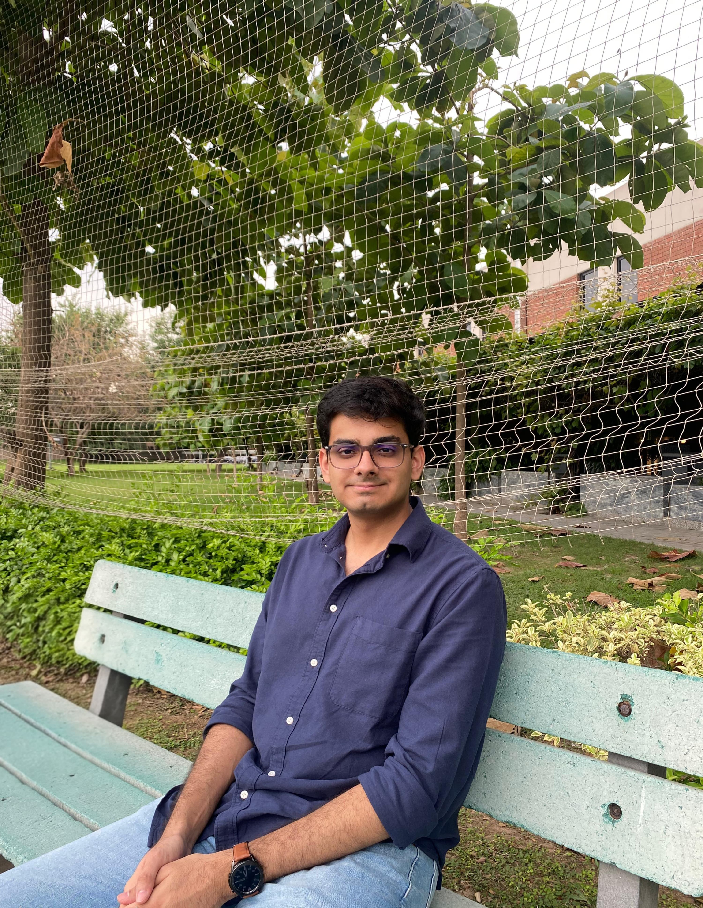
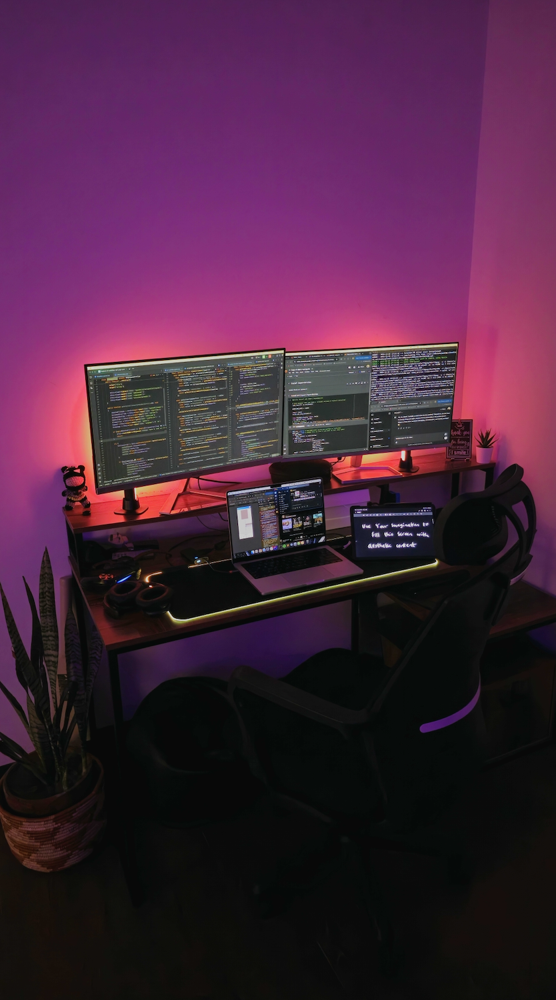
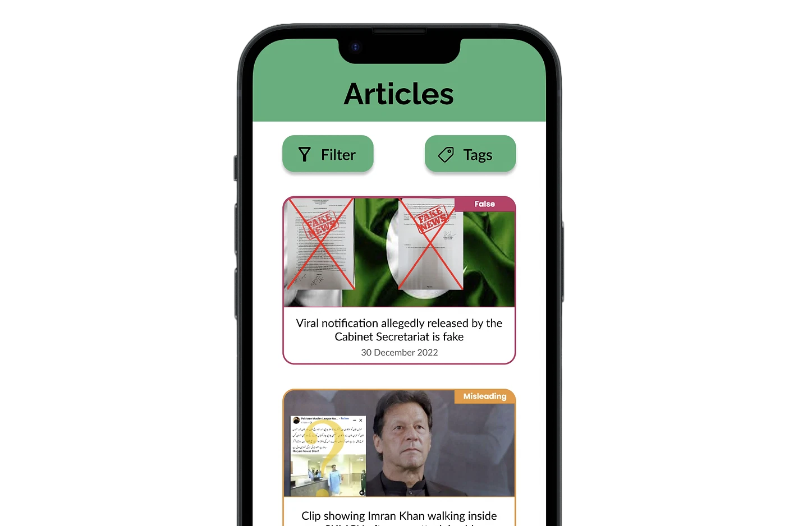
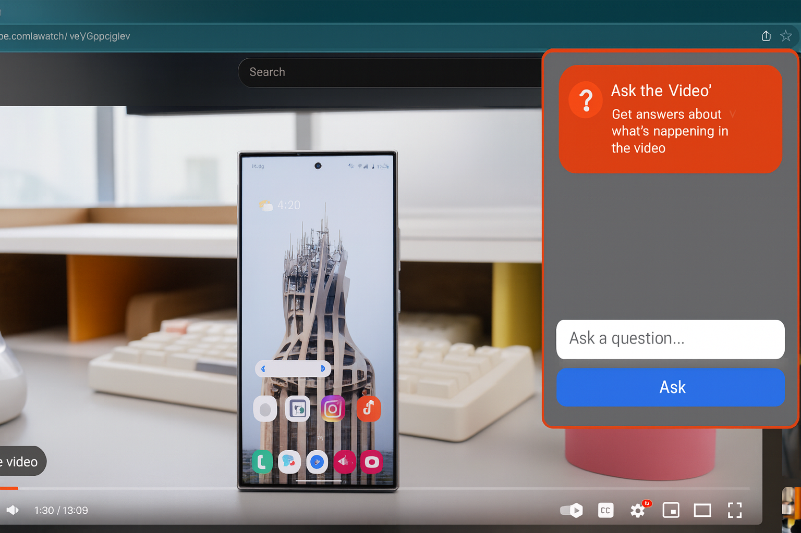

Taimur
Hassan Sarmad
I architect systems, not just ship features. From initial design to production deployment, I build AI-powered web and mobile products that scale, with deep attention to performance, maintainability, and the engineering details that matter.


A true engineer, not just a coder
I'm a full-stack engineer with a focus on AI-powered products and scalable systems. For 2+ years at PosterMyWall, I've shipped features used by millions, from a multi-agent AI orchestrator to a custom Fabric.js timeline editor for subtitles.
I specialize in designing and building systems with a deep understanding of architecture, performance, scalability, and maintainability across the entire stack, from initial design, to production deployment, to post-release optimization.
I care about the engineering details: efficient algorithms, the right database for the job (MongoDB? InfluxDB? Redis?), async pipelines, and code that other engineers can pick up six months later without losing context.
Where I've built
Full-Stack Software Engineer
- Built a multi-agent AI system on an extended NeuronAI framework powering PosterMyWall's AI Chat, driving 165K+ chats and 96K+ generated assets at a 75% positive feedback rate during a 6-week unmarketed soft launch. Added parallelism to the agent/node architecture and designed a hybrid agentic multimodal context formation layer (chosen over RAG-style embedding retrieval) that sends only relevant labeled chat assets to downstream agents, cutting workflow latency by 6–8s and lifting positive feedback ratio by 70%.
- Architected an AI subtitling feature letting users add AI-generated or manual subtitles to audio/video content, sync and edit them via a React timeline-UI, and apply advanced styling/animations in a custom Fabric.js grouped object.
- Shipped the AI Image Generation panel, orchestrating multiple AI image models on the backend with prompt validation, quota management, and Stripe integration; an optimized ingestion pipeline injects generated assets directly onto the design canvas.
- Engineered an end-to-end AI sticker pipeline generating thousands of stickers at scale with auto-tagged context-aware keywords (drastically improving semantic search), paired with a Python computer-vision sheet extractor that took manual asset throughput from 50/day to 100+/min.
- Scaled stock media from 2K → 300K+ items across 8 categories by optimizing MySQL tables and relationships, automating preset generation on AWS S3 with ImageMagick/FFmpeg, and adding AI keyword/category tagging for efficient search via AWS CloudSearch and OpenSearch.
- Reverse-engineered the 2D transformation math behind Fabric.js's resize, scale, and rotate controls to rebuild them as HTML/CSS overlays, operating correctly even on canvas objects positioned outside the visible viewport.
- Built a constraint-aware color-assignment algorithm that applies and reshuffles palettes across multi-layer canvas designs in real time, analyzing z-index stacking and geometric overlaps to guarantee visual contrast between touching items.
- Refactored 57 React components by eliminating duplicated state and anti-pattern useEffects, replacing them with reusable hooks and selectors so components only react to relevant updates, preventing wasted re-renders and significantly improving readability.
Academic background
Things I've shipped
A multi-agent AI orchestrator that automates marketing workflows via natural language. Engineered agentic workflows with Gemini and OpenAI that infer user intent and trigger complex tool-calling, image generation, editing, upscaling, and social scheduling, all from a single prompt.
A React Native app for the Punjab Government delivering real-time AQI data, 24-hour ML forecasts, and personalized location-based push notifications. Migrated monitor data from MongoDB to InfluxDB when readings went minute-level, cutting storage costs by 30× and time-range queries by 200×.
Automated subtitle engine using OpenAI transcription APIs, with a custom React timeline-UI for audio/video sync. Built a specialized Fabric.js grouped-object item for high-performance, deeply customizable on-canvas captions, more feature-rich than CapCut, with zero canvas bloat or lag.
Full-stack text-to-image workflow with dynamic state management, custom loading skeletons, and interactive prompt/style controls. Engineered the backend to orchestrate multiple AI image models with prompt validation, user quota management, and Stripe integration. Optimized ingestion pipeline injects AI images directly onto the design canvas.
Admin dashboard automating the lifecycle of thousands of stock assets. Engineered an end-to-end AI pipeline that generates stickers at scale and auto-assigns context-aware keywords, drastically improving semantic search accuracy. Built with lazy loading, categorized tabs, and complex filtering to handle heavy payloads.
Eliminated a major design bottleneck with a custom Python computer vision pipeline. Engineered a system to isolate individual stickers from large sheets, automated cropping, AI upscaling, and background removal. Transformed a manual process limited to 50 stickers/day into an automated workflow processing 100+ assets in minutes, a 2,000%+ throughput gain.
Other things I've built
German A1 Revision Web App


Mobile-first study companion for German A1, flashcards, vocab drills, and grammar exercises designed for quick daily revision on the go. Built end-to-end in collaboration with Claude as a quick personal tool and deployed on Vercel.
View Live ↗FactCheck — Multilingual Web Scraper

Python web scraper fetching and translating fact-checked articles into Urdu. Cron-scheduled Google Translate API with Redis caching cut API costs by 95%. React + Flask web app with SSR, lazy-loading, and infinite scroll, optimized for low-resource devices and deployed on EC2/Apache.
Android Audio-Eavesdropping Exploit
Bypassed Android 12's 200 Hz IMU sampling limit by exploiting sensor management vulnerabilities. Built a kernel-level interleaving algorithm to double sampling frequency without user permissions, recording accelerometer data alongside Google Assistant audio and producing noise-free mel-spectrograms.
YouTube AI Chatbot

Chrome extension integrating YouTube's Transcript API and OpenAI's GPT API to let users query video content. Used messaging between content and background scripts to eliminate two user actions commonly required by similar tools.
Available for select contract work
In a market saturated with vibe-coders, I offer a different value proposition.
A true engineering mindset at a competitive market rate. I take on a limited number of contract projects where the work is technically interesting and the client values long-term reliability over quick hacks.
- AI-powered product development (LangChain, RAG, agentic workflows)
- Greenfield React / React Native builds with TypeScript
- Scalable Node/Python backends with thoughtful data modeling
- Performance audits and codebase rescues
Let's build something great.
Whether you're hiring full-time, scoping a contract, or just want to swap notes on AI systems, I'd love to hear from you. I reply within a day.
taimur.h.sarmad@gmail.com